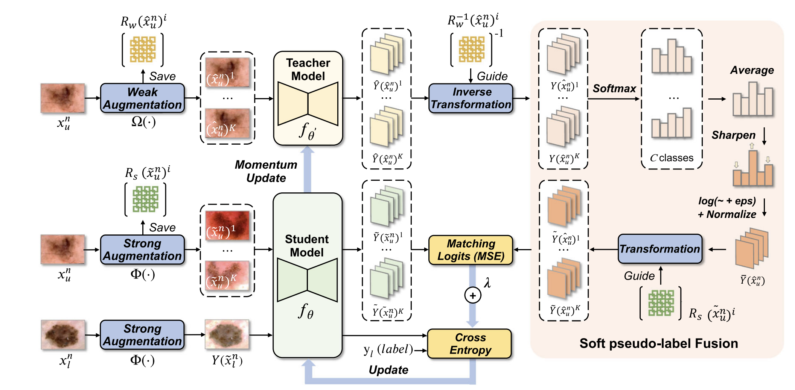

Yuanchen Wu
|
I am currently a graduate student at Shanghai University, Shanghai, under the supervision of Prof. Xiaoqiang Li. Before that, I got my Bachelor's degree in Computer Science from College of Information Engineering, Shanghai Maritime University at June 2022. My research focuses on computer vision and pattern recognition, particularly on the following topics: · Semantic Segmentation · Semi-Supervised / Weakly supervised Learning · Medical Imaging
News
Publications
- Semi-supervised medical imaging segmentation with soft pseudo-label fusion
Xiaoqiang Li; Yuanchen Wu; Songmin Dai
Applied Intellgence 2023 | paper  - An Attention-Based 3D CNN With Multi-Scale Integration Block for Alzheimer's Disease Classification
Yuanchen Wu; Yuan Zhou; Weiming Zeng; Qian Qian; Miao Song
IEEE Journal of Biomedical and Health Informatics 2022 | paper
- Classification of patients with AD from healthy controls using entropy-based measures
of causality brain networks
Yuanchen Wu; Yuan Zhou; Miao Song
Journal of Neuroscience Methods 2021 | paper
Projects
Project Page | Key Words: YOLO v5; Vue.js; Flask; Axios